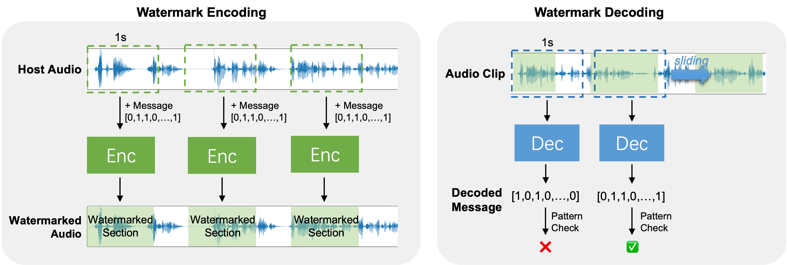

WavMark: Watermarking for Audio Generation
Guangyu Chen†, Yu Wu‡, Shujie Liu‡, Tao Liu†, Xiaoyong
Du†, Furu Wei‡
Microsoft Research Asia‡
Renmin University of China†
Framework Overview

During the encoding phase, we iteratively embed a 1-second watermark section into the host audio, ensuring
the entire time domain protection.
Since the watermarked audio may be clipped,
in the decoding process, we need to determine the watermark position.
To address this issue, we made our model to be shift-invariant, allowing for a maximum misalignment of 0.1
seconds in the decoding position.
This characteristic enables us to efficiently apply a Brute Force Detection (BFD) strategy for decoding.
Specifically, the encoded message is composed of pattern bits and payload bits. When decoding, we utilize a
decoding window with a sliding step of 0.05 seconds to attempt decoding continuously.
Then, the correct watermark results are identified by checking with the predefined pattern bits.